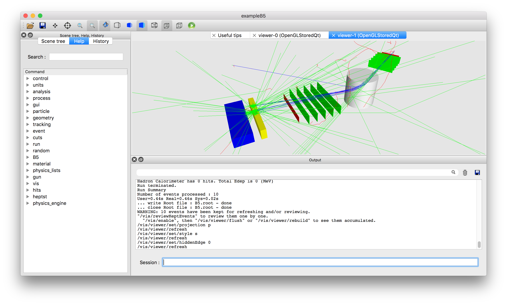
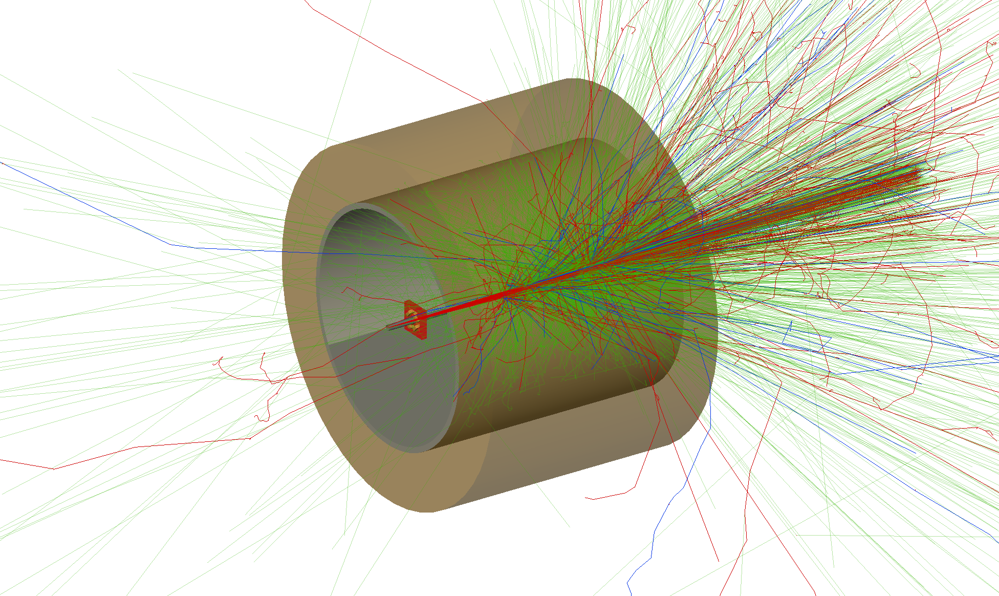
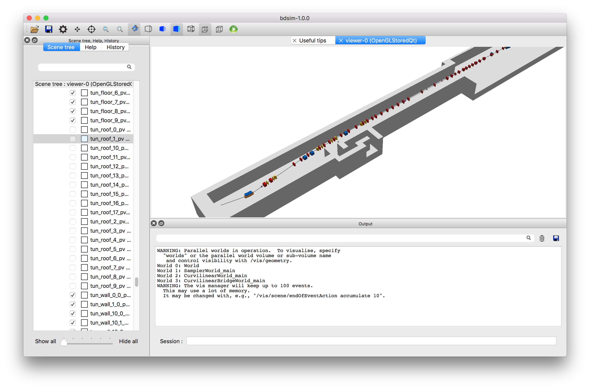
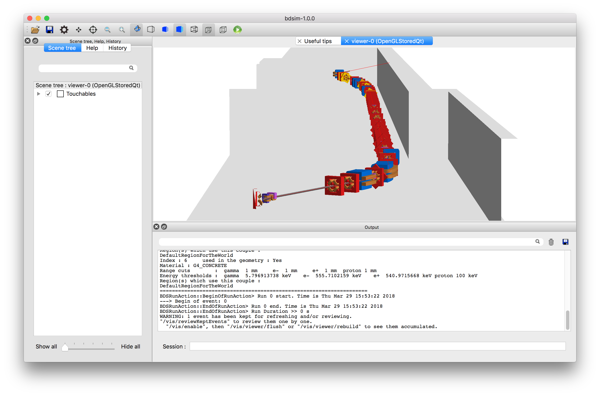

Introduction
Purpose of BDSIM
Beam Delivery Simulation (BDSIM) is a C++ program that utilises the Geant4 toolkit to simulate both the transport of particles in an accelerator and their interaction with the accelerator material. BDSIM is capable of simulating a wide variety of accelerator components and magnets with Geant4 geometry dynamically built based on a text input file. Thick lens accelerator tracking routines are provided for fast accurate tracking in a vacuum.
What BDSIM is suitable for
Single particle Monte-Carlo simulations of particle accelerators
Simulating beam loss in a particle accelerator
Simulating particle transport in an accelerator where matter interaction is expected, such as transport in air.
Simulating detector backgrounds from halo and machine background sources
What BDSIM is not intended for
Long-term tracking studies
Simulating collective effects
Lattice optical design and optimisation
A replacement for tracking codes like MAD-X, SixTrack or PTC
Example Applications
Detector background from the accelerator
Beam transport in air
Beam interaction with vacuum gas
Losses in beam extraction
Collimation system efficiency and secondary radiation
Transport of products from target through accelerator
LHC beam loss and energy deposition
CLIC muon background from the accelerator
Laserwire detector signal to background ratio
ILC collimator efficiency study and detector backgrounds
See Worked Examples for walk through examples with exact commands and input required and example plots.
Capabilities
BDSIM uses ASCII text input with a syntax designed to be very similar to MAD8 / MAD-X.
Convert MAD-X / MAD8 / TRANSPORT model to a 3D model in minutes
Generate beam distribution according to Twiss parameters of a beam
Track beam distribution and records particle distribution after each component
Simulate energy deposition in all components along beam line
Calculate beam distribution and Twiss optical functions from particle distribution
Use the full set of physics processes available in Geant4
Adjust cross-sections of processes of interest
Use externally provided geometry and field maps for a fully customised model
Interactively visualise a model in 3D as well as particle tracks
Analyse history and origin of radiation produced in accelerator with analysis suite
Strong reproducibility - recreate any event again exactly
Simulation Procedure
Create a text input .gmad lattice for BDSIM by converting a MAD-X or MAD8 Twiss file or writing your own manually.
Run BDSIM with core beam distribution for validation of optics and therefore model preparation.
Run BDSIM with desired input distribution and physics processes with low statistics to verify desired application.
Repeat 3) with greater statistics either as a single instance or on a computing cluster.
Analyse output data as desired.
How BDSIM Works
BDSIM builds a complete Geant4 model and runs it as a Geant4 model.
BDSIM does not link to another particle tracking code.
BDSIM does not pass information back and forth between two codes.
Thick lens tracking routines are used in place of normal 4th order Runge-Kutta integrators.
BDSIM provides the required transforms between Cartesian and Curvilinear coordinate systems for accelerator tracking routines.
In a Geant4 program, code is written in C++ to construct a 3D model of the object to be simulated. A Geant4 example is shown below being interactively visualised.
{kind=link}

Example Geant4 program being visualised with events displayed.
This is labour-intensive and inflexible for different accelerator models or optics. As accelerators typically consist of a standard set of components these can be made reasonably generic. BDSIM provides a library of geometries and fields that allow simple optical descriptions to be made into 3D models. Example screenshots are shown below.
{kind=link}

“beamLoss” example of four quadrupoles in a small tunnel section.
{kind=link}

Accelerator Test Facility 2 in KEK, Japan with tunnel model.
{kind=link}

Accelerator Test Facility 2 in KEK, Japan with tunnel model.
Apart from the 3D geometry, a crucial component of a model is the electromagnetic fields. Fields in Geant4 may be specified through a developer-provided C++ class that returns the field vector as a function of global Cartesian variables x, y, z and t. BDSIM provides classes to describe the magnetic fields found for each type of accelerator magnet as well as the transforms so that they can be described locally with respect to a particular magnet.
To calculate the motion of charged particle in a field, Geant4 uses a numerical integrator such as a 4th Order Runge-Kutta algorithm. This is the most general solution for a varying field but in an accelerator the specific fields have specific analytical solutions that can be used for improved accuracy and computational efficiency. BDSIM provides these tracking routines for “thick lens” tracking.
These ‘integrators’ are typically constructed with a strength that represents the field (such as k1 for a quadrupole) and the field vector \(\vec{B}\) is ignored. Of course, in a full radiation transport simulation, there can be many different types of particles in all directions (even backwards). The thick lens tracking routines do not work for particles travelling backwards or perpendicular, so we resort back to a numerical integrator (typically 4th order Runge-Kutta) in these cases. The thick lens routines are used for paraxial particles only.
Thick lens tracking routines typically work in a curvilinear coordinate system that follows the reference trajectory, whereas Geant4 must work in global Cartesian coordinates. BDSIM bridges these two systems with an automatically created parallel geometry of simple cylinders that follow the beam line. Using the coordinate system of this parallel geometry creates transforms between coordinate systems.
Tracking
There are a variety of particle tracking routines and BDSIM supplies several sets. The set “bdsimmatrix” issued out-of-the-box uses thick lens tracking and provides agreement with MAD-X and PTC tracking codes.
A second set of routines called “bdsimtwo” is similar but differs in the way dipoles magnets are treated. In this case, a constant pure dipole field is used to calculate the motion of the particle (using a Rodrigues rotation in global Cartesian coordinates). The field is a ‘hard-edge’ field - it exists inside the volume at the same strength everywhere and is zero outside. Whilst the tracking algorithm is accurate, such a model does not agree with MAD-X or PTC when the dipoles have angled pole faces. This integrator set is computationally more efficient than the “bdsimmatrix” set, as no transforms between Cartesian and curvilinear coordinate systems are required for dipoles. In the case of a high-energy accelerator with no pole face angles or low angle bends, “bdsimtwo” may safely be used for accurate results and increased performance.
Note
With the “bdsimmatrix” routines, the tracking associated with the pole face angle is handled not by the physical shape of the magnet but by the thick lens matrix. Therefore, no pole face angles are physically constructed. The tracking however does represent the pole faces. Developments underway will allow both correct tracking with the thick lens matrix and the physical angled pole face.
Limits
Energy
The user must understand the validity of the Geant4 models used and the applicability of the physics processes / models at their energy regime. Most Geant4 high-energy processes will not work above (and including) 50 TeV for a single particle. In Geant4.10.4, limits have been raised to 100 TeV.
Model Physical Size
BDSIM uses a small padding distance between all surfaces and in addition, Geant4 treats the intersection with every surface of every solid with a certain tolerance. Specifying a tolerance like this avoids infinite recursion (or at least costly recursion) to ascertain the intersection of a curved track with a surface. This tolerance is by default \(10^{-9}\) mm. BDSIM and Geant4 use double floating point precision throughout providing approximately 15 to 16 significant figures. Therefore, a maximum size of a model while still maintaining tracking precision is \(10^7\) mm. This leads us to conclude that a model of order the size of the LHC is a practical maximum. Developments are underway to dynamically adjust this tolerance so as to increase this size. Please contact us for advice (see Feature Request). However, Geant4 and CLHEP are not fully templated (yet) to allow the use of higher precision numbers.